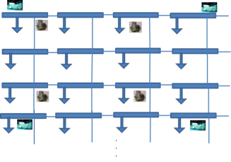

Date of Publication:
2016-08-12Version Information:
0.5Model Accessibility:
Proprietary Documentation:
Not proprietary. All available documentation is public.Model Symbol:
Accreditation:
TRL 2Type/Category of Model:
Brief Theoretical Background:
A scalable power transmission system model for testing solver scalability. A number of variants exist. Initial model includes a square matrix of power system busses. A generator for every 9 buses, and a motor load for every 4 buses. A small load is attached to every bus. The swing bus is the generator bus near the center of the system. Transmission lines connect every bus to its neighbors. The first variant uses a 4 element neighborhood. The second also attaches the downward diagonal lines, and the third uses a 9 element neighborhood. The edge buses have fewer transmission lines since they have few neighbor buses. Other variants change the type of the load. The specified generator output must be tuned precisely to the load so the slack bus and transmission lines are not overloaded; this is particularly true for larger sizes of network.Model Specifications:
Model Dependencies:
This model depends on a generator, motor load, bus and transmission line models, all of which exist in GridDyn.Interfacing Information:
Runs in GridDyn using the GridDyn XML file input format and controls. Outputs include power flow results, and possible extensions to dynamic simulation. Future work includes generating the test cases in other formats for other software.Diagrammatic Representation:
Interfacing Capabilities for HIL Simulations:
None used or planned.Model Validation:
Model not based on realistic network, used for software testing. Validation involves ensuring the model converges and no line flows exceed the capacity of the specified transmission lines and all bus voltages are within normal levels.Metrics for validation:
None.